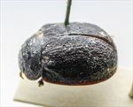
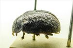
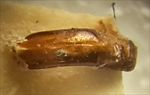

Click on images to enlarge
{kind=link}

Fig. 1. Paropsis sordida type specimen, dorsal view
{kind=link}

Fig. 2. Paropsis sordida type specimen, lateral view
{kind=link}

Fig. 3. Paropsis sordida type specimen, aedeagus, dorsal view
{kind=link}
Fig. 4. Paropsis sordida, description
Name
Paropsis sordida Blackburn, 1896
Corresponds to
Diagnosis and Notes
Blackburn (1896) deals with P. sordida as part of his 'subgroup ii' (i.e., those species without "strongly marked characters", whose greatest height is not or scarcely in front of the middle of the elytral margin and whose elytra are depressed under the humeral callus). Within that group, he characterises it as:
A. Inner edge of humeral callus distinctly nearer to lateral margin of elytra than to suture;
B. Sides of prothorax more or less explanate;
C. Elytra not having well-defined continuous costae;
D. Puncturation of the elytra not particularly fine;
E. Upper surface of elytra in general, or at least the verrucae, black or nearly so;
FF. Explanate margins of prothorax much narrower [<⅓ of width of discal part];
G. Median verrucae of prothorax scarcely defined;
HH. Prothorax not coloured as in piceola [not dark in middle, with contrasting pallid sides];
II. Elytral verrucae much less distinct, confused (especially in front) with interstitial rugulosity;
JJ. Puncturation of prothorax not close and asperate; form much less convex [than mixta];
K. Postbasal impression of elytra almost wanting.
From the brief examination of the type specimen of P. sordida, this could be be Ta173 or possibly Ta15 (both are likely to be present at or near the type locality). The shape of the aedeagus is essentially the same for both species, with the HCE/BL ratio also at a value that would fit either species. However, the aedeagus of the type specimen is quite long and that is a much better fit for Ta173. The elytra have longitudinal rows of slightly paler interstices, which are also present in Ta173 but not Ta15. Blackburn notes that the antennae of the male are shorter than those of the female. This would be very unusual for a Trachymela species, and Blackburn's observation is unlikely to be based on actual measurements. However, the antennae of females of Ta173 (as a proportion of body length) are only very slightly shorter than those of the male (about 6%), compared with a more typical species such as Ta15 (about 13%).
Type specimen
Location: BMNH
Label data: /“Type” (red-bordered circle)/ “6155 S.A. T”/ “Blackburn coll. 1910-236.”/ “Paropsis sordida Blackb.”/.
Male; Size: 8.45 (L) x 5.4 (W) x 3.6 (H) mm; A-A: 1.39 mm; Aedeagus: LPE=2.71 mm; HCE/BL: ~17.8% (estimated from photo of lateral view of type specimen).
Original description
Translation of original description (Figure 4) by ChatGPT, 03/2026:
Rather broadly ovate, less convex, the greatest height (seen from the side) placed at or a little behind the middle of the elytra; fairly shining; pitchy, here and there (especially on the head and on the sides of the elytra and pronotum) reddish, base of the antennae red; head rather roughly and fairly densely punctulate; prothorax wider than long in the ratio nearly 2½ to 1, widened a little beyond the middle from the apex, behind the apex distinctly transversely impressed, more densely and somewhat roughly (more coarsely at the sides) punctate, sides rather arcuate, scarcely flattened, posterior angles obtuse; scutellum almost smooth; elytra distinctly depressed beneath the humeral callus, behind the base scarcely transversely impressed, rather closely and strongly subseriately (a little stronger at the sides, more closely toward the apex) punctate, with some small, rather indistinct verrucae irregularly arranged; interstices distinctly rugulose (especially toward the apex), but the rugules on the disc not obscuring the punctures; marginal area rather narrow but clearly separated from the disc by a continuous groove; humeral callus much more distant from the suture than from the lateral margin; basal ventral segment sparsely finely punctulate. Male a little more depressed than the female, with somewhat shorter antennae. Length 4–4⅕ lines [~8.5-8.9 mm], width 3–3 3/10 lines [~6.4-7.0 mm].
References
Blackburn, T. 1896, "Revision of the genus Paropsis. Part I", Proceedings of the Linnean Society of New South Wales, vol. 21, no. 4, 637-693 (page 661).
Copyright © 2026. All rights reserved.